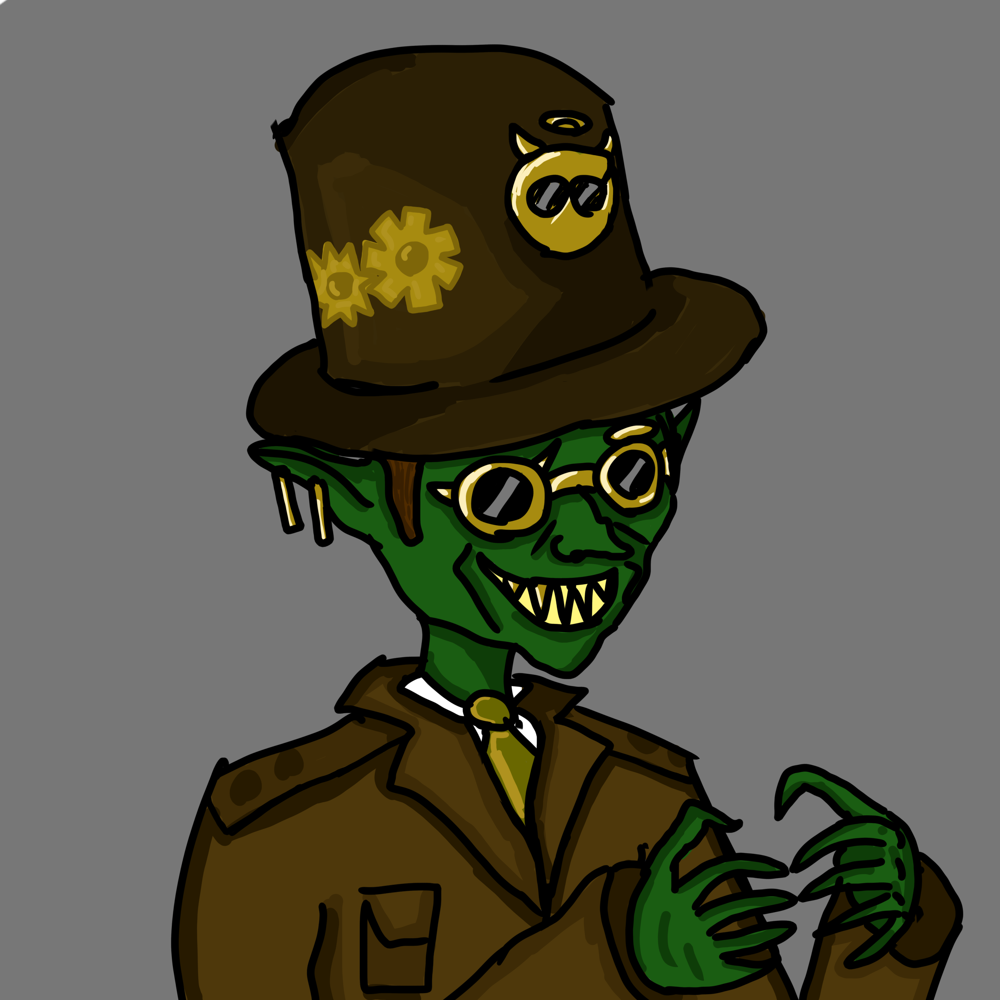

Egy nagyranőtt goblin, akinek feltehetőleg van némi tapasztalata a kereskedelemben.
Lehetséges, hogy korábban lakatosként dolgozott, mivel már láttuk zárat feltörni.
Egy nyolclövetű revolvert használ gyilkosságok elkövetésére.

Nyomozóöltönyt visel. Egy kifejezetten nagyranőtt goblin, akin többszöri szemügyre vétel után sem vettünk észre semmi furcsaságot. Aranyfogazata van.